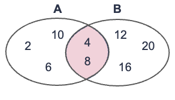
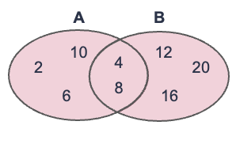
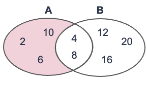
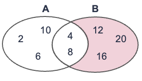
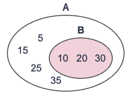
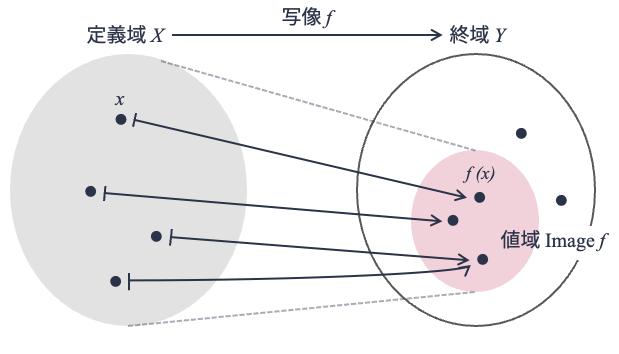

集合と写像#
関係データベースのデータモデルである関係データモデルは，代数学，特に集合と写像に関する数学理論に支えられている． 関係データモデルを理解するためにはこれらの知識が必要となるため，以下，最低限必要となる集合と写像の知識を説明する．
以下の説明はかなり形式的である． 当たり前のことを記号的に説明することになるが，物事を抽象化して捉えるためには記号的（数学的）な道具が必要になるので，嫌がらず読んでほしい（ただし気負いすぎないこと）． なお，集合と写像について知識がある読者は，本節を読み飛ばしても問題ない．
集合#
数学における集合（set） とは，何かを集めたものである． 集合を構成する個々の「何か」は 要素（あるいは元; element） と呼ばれる．
例えば，以下は集合の例である．
\(\{1, 2, 3\}\)
上記集合は整数1，2，3を要素として集めたものである． 1，2，3はそれぞれ集合{1, 2, 3}の要素である． 一般に，集合は波カッコの中に要素を並べて表現する．
集合には名前がつけられる． 例えば，上記集合について
\(A = \{1, 2, 3\}\)
とすれば，集合\(\{1, 2, 3\}\)を集合Aと呼ぶことができる． なお，慣習上，集合をアルファベットで表すときは大文字アルファベット1文字，集合の要素をアルファベットで表すときは小文字アルファベット1文字を使う（例外ケースもある）．
ある要素がある集合に属していることは，記号\(\in\)を用いて表現する． 例えば，整数1が集合Aに属していること（つまり集合Aの要素であること）は
\(1 \in A\)
と書ける． 一方，ある要素がある集合に属して「いない」ことは，記号\(\notin\)を用いて表現する． 例えば，整数7が集合Aに属していないことは
\(7 \notin A\)
と書ける．
集合の要素は数に限らない． 例えば，以下の平仮名集合Hのように文字の集合もありうる．
\(H = \{あ, い, う, え, お, ...., わ, を, ん\}\)
なお，集合の要素間の順序関係は無視される[1]． それゆえ，集合\(A=\{1, 2, 3, 4, 5\}\)と\(B=\{5, 4, 3, 2, 1\}\)はまったく同じ集合となる． つまり，
\(A=B\)
となる． また，（数学的な定義の）集合の要素は重複してはならない[2]． 重複する要素があった場合は，重複を無視して集合が扱われる． 例えば，\(A=\{1, 3, 5, 7, 7\}\)は\(A=\{1, 3, 5, 7\}\)として扱われることになる．
集合の外延的定義と内包的定義#
集合の定義（表記）方法には2種類ある．
1つは外延的定義である． これは集合の要素を具体的に列挙することで，集合を定義する方法である． 例えば，
\(A = \{2, 4, 6, 8, 10, 12, 14, 16, 18, 20\}\)
は「20以下の偶数」である集合Aを外延的定義によって定義したものである． 外延的定義では集合の要素をすべて列挙するのが大変なため，以下のように途中をテンテンで省略して書く場合もある．
\(A = \{2, 4, 6, ..., 18, 20\}\)
2つめの定義方法は内包的定義である． 外延的定義では要素を具体的に列挙するのに対して，内包的定義では集合の要素が満たすべき条件（性質）を示すことで集合を定義する． 例えば，前述の集合Aであれば，
\(A = \{ 2n \ | \ nは整数かつ0\leq n \leq 10\}\)
と書ける．内包的定義では波カッコの中を縦棒（|）で区切り，左側に集合の要素を表す文字を書き，右側には要素に関する条件を書く． なお，条件のAND（「かつ」）は以下のようにカンマで書くこともある．
\(A = \{ 2n \ | \ nは整数, 0\leq n \leq 10\}\)
よく使われる数の集合#
整数，自然数のように，よく使われる数の集合には特別な集合名が付けられている． 以下，代表的な数の集合を列挙しておく．
\(\mathbb{Z}\)は，整数全体をあらわす集合である． すなわち，
\(\mathbb{Z} = \{..., -2, -1, 0, 1, 2, ... \}\).
例えば，\(-7 \in \mathbb{Z}\)であり，\(0.3 \notin \mathbb{Z}\)である．
\(\mathbb{N}\)は，自然数全体をあらわす集合である． すなわち，
\(\mathbb{N}= \{1, 2, 3, ... \} = \{ n \ | \ n \in \mathbb{Z}, n \geq 1 \}\).
\(\mathbb{R}\)は，実数全体をあらわす集合である． 例えば，\(\sqrt{3} \in \mathbb{R}\)，\(\pi \in \mathbb{R}\)，\(e \in \mathbb{R}\)であり，\(1+1i \notin \mathbb{R}\)，\(文字 \notin \mathbb{R}\)である（★Quiz1★，★Quiz2★）．
空集合#
要素を持たない集合も集合である． そのような集合を空集合と呼ぶ． 空集合は\(\phi\)で表す． すなわち，
\(\phi = \{\}\)．
集合の要素数#
集合Xの要素数は，\(|X|\)と表記する． 例えば\(A=\{1, 2, 3, 4, 5\}\)のとき，\(|A|=5\)である． また，
\(Z_n = \{0, 1, 2, 3, ...., n-1\} = \{x \ | \ x \in \mathbb{Z}, 0 \leq x \le n \}\)
のとき，\(|Z_n| = n\) となる．
要素を持たない集合も集合である． そのような集合を空集合と呼ぶ． 空集合は\(\phi\)で表す． すなわち，
\(\phi = \{\}\)．
積集合（集合の共通部分）#
2つの集合A，Bが与えられたとき，集合A，Bに共通の要素を集めた集合を積集合（あるいは共通集合; intersection） と呼ぶ． 集合Aと集合Bの積集合は\(A \cap B\)と記す． 積集合\(A \cap B\)の内包的定義は以下の通り：
\(A \cap B = \{ x \ | \ x \in A かつ x \in B\}\)
例えば，以下の図は集合\(A=\{2, 4, 6, 8, 10\}\)と集合\(B=\{4, 8, 12, 16, 20\}\)の積集合\(A \cap B\)をベン図で表している． このケースでは\(A \cap B = \{4, 8\}\)となる．

和集合#
2つの集合A，Bが与えられたとき，集合A，Bのいずれかに属する要素を集めた集合を和集合（union） と呼ぶ． 集合Aと集合Bの和集合は\(A \cup B\)と記す． 和集合\(A \cup B\)の内包的定義は以下の通り：
\(A \cup B = \{ x \ | \ x \in A または x \in B\}\)
例えば，以下の図は集合\(A=\{2, 4, 6, 8, 10\}\)と集合\(B=\{4, 8, 12, 16, 20\}\)の和集合\(A \cup B\)をベン図で表している． このケースでは\(A \cup B = \{2, 4, 6, 8, 10, 12, 16, 20\}\)となる．

差集合#
2つの集合A，Bが与えられたとき，集合Aには属しているが集合Bには属していない要素を集めた集合をBからAを引いた差集合（set difference） と呼ぶ． 集合Bから集合Aを引いた差集合を\(B-A\)または\(B \setminus A\)と記す． 和集合\(B-A\)の内包的定義は以下の通り：
\(B-A = \{ x \ | \ x \in B かつ x \notin A\}\)
例えば，以下の図は集合\(A=\{2, 4, 6, 8, 10\}\)から集合\(B=\{4, 8, 12, 16, 20\}\)を引いた差集合\(A-B\)をベン図で表している． このケースでは\(A-B = \{2, 6, 10\}\)となる．

以下は，集合Bから集合Aを引いた差集合\(B-A\)を表したベン図である． このケースでは\(B-A = \{12, 16, 20\}\)となる． 2つの図を比較したら分かるように，差集合\(A-B\)と\(B-A\)は異なる（★Quiz3★）．

部分集合#
2つの集合A，Bが与えられたとき，集合Bが集合Aの一部としてすっぽり入っているとき，集合Bは集合Aの**部分集合（subset）**と呼ぶ． もう少し堅い定義をすると，集合Bの任意の要素（あらゆる要素）が集合Aに属するとき，集合Bは集合Aの部分集合である，とする． 集合Bが集合Aの部分集合であることを，\(B \subset{A}\)と記す．
例えば，以下の図は集合\(A=\{5, 10, 15, 20, 25, 30, 35\}\)と集合\(B=\{10, 20, 30\}\)があるとき， 集合Bの要素はすべて集合Aの要素なので，\(B \subset{A}\)となる（★Quiz4★）．

直積#
2つの集合AとBが与えられたとき，Aの要素とBの要素を1つずつ取り出して作れるすべての組（ペア）を集めた集合を直積集合（Cartesian productあるいはdirect product） あるいは単に直積と呼ぶ． 集合AおよびBの直積集合は\(A \times B\)と記す． 直積集合\(A \times B\)の内包的な定義は以下の通り：
\(A \times B = \{ (a, b) \ | \ a \in A, b \in B \}\)．
例を見てみよう． 例えば，\(A=\{1, 3, 5\}\)，\(B=\{2, 4, 6\}\)のとき，AとBの直積は
\(A \times B = \{ (1, 2), (1, 4), (1, 6), (3, 2), (3, 4), (3, 6), (5, 2), (5, 4), (5, 6) \}\)
となる．
もう1つ例を見てみよう． 直積\(\mathbb{R} \times \mathbb{R}\)は2つの実数の組の集合になる． 1つ目の\(\mathbb{R}\)の要素をx座標の値，2つ目の\(\mathbb{R}\)の要素をy座標の値とすれば，\(\mathbb{R} \times \mathbb{R}\)は2次元平面と見なすことができる．
最後に数値ではない直積の例を見てみよう． 集合\(C = \{データベース, 機械学習\}\)，集合\(D=\{優, 良, 可, 不可\}\)が与えられたとき， 集合Cと集合Dの直積は，
\(C \times D = \{(データベース, 優), (データベース, 良), (データベース, 可), (データベース, 不可),\\ \ \ \ \ \ \ \ \ \ \ \ \ \ \ \ \ \ \ \ (機械学習, 優), (機械学習, 良), (機械学習, 可), (機械学習, 不可)\}\)
となる．
関係データベースは直積と関連が深い． 高校数学には学ばなかった（と思われる）直積であるが，きっちり概念を押さえておこう（★Quiz5★）．
写像#
写像とは，2つの集合間の対応づけを表すものである． 集合\(X\)に属するどの要素も，ルール\(f\)で集合\(Y\)に属するいずれかの要素に対応づけすることが可能なとき，\(f\)を「\(X\)から\(Y\)への写像」と呼ぶ． \(f\)が\(X\)から\(Y\)への写像であることを，以下のように記す．
\(f: X \to Y\)
また，写像\(f\)によって集合\(X\)の要素\(x\)が集合\(Y\)の要素\(y\)に対応することを，以下のように記す（矢印の種類が異なることに注意）．
\(f: x \mapsto y\)
このとき\(y\)のことを，写像\(f\)による要素\(x\)の像（あるいは値） と呼び，\(f(x)\)と記すこともできる．
最も馴染みのある写像の一つは関数である． 例えば，小売店で商品を購入する際には，商品価格\(x\)に対して消費税10%分を加算した料金を支払う． 最終的な支払い料金\(y\)を計算する関数\(f\)は
\(y= f(x)= 1.1x\)
と書ける． 商品価格や最終的な支払い料金は実数であり，関数\(f\)は実数から実数への写像になるため，
\(f: \mathbb{R} \to \mathbb{R}\)
と書くことができる． また，
\(f: x \mapsto 1.1x \)
と書くこともできる．
関数ではない現実的な写像の例を示そう． 大学では，学生が履修した科目に対して「優」「良」「可」「不可」の4段階の成績が付けられることが多い． 今，集合\(S\)は学生の集合，集合\(C\)は科目の集合としたとき，集合\(S\)と\(C\)の直積集合\(S \times C\)は（考えられうる）学生の科目の履修状況と見なせる（見なすことにしよう）． 例えば，\(S= \{山畑滝子, 川澄桜, ... \}\)，\(C=\{線形代数, データベース, ...\}\)とすると，
\(S \times C = \{(山畑滝子, 線形代数), (山畑滝子, データベース), (川澄桜, 線形代数), ... \}\)
といった感じになる． さて，成績の種別を表す集合を\(U = \{優, 良, 可, 不可\}\)とすると，各学生の各科目に成績を付けるという行為（\(f_{採点}\)）はまさに集合\(S \times C\)から\(U\)への写像と見なすことができる． よって，以下のように書くことができる．
\(f_{採点}: S \times C \to U\)
定義域と値域#
最後にもう3つだけ定義を導入する． 上で写像\(f: X \to Y\)の概念を導入したが，写像元と写像先に名前を付けておくと便利なため，3つの概念を導入する．
1つ目は定義域である． 集合\(X\)から集合\(Y\)への写像\(f\)が与えられたとき，集合\(X\)を写像\(f\)の定義域と呼ぶ．
2つ目は終域である． 集合\(X\)から集合\(Y\)への写像\(f\)が与えられたとき，集合\(Y\)を写像\(f\)の終域と呼ぶ．
3つ目は値域である． 集合\(X\)から集合\(Y\)への写像\(f\)が与えられたとき，\(f\)によって写された集合\(X\)の要素の集合を写像\(f\)の値域と呼ぶ． 値域は\(\mathrm{Image} f\)と記される． 値域は少しややこしいが，定式化すると以下のように書ける
\(\mathrm{Image} f = \{f(x) \ | \ x \in X \}\)
終域と値域の違いが分かりづらいかもしれないが， 値域は終域の要素（\(y \in Y\)）の中でも，\(y=f(x)\)を満たすような\(x\)が存在する\(y\)の集合を表す． 図にすると以下のようになる（図は「群論への第一歩（結城浩著, SBクリエイティブ）」から山本が書き起こし編集）（★Quiz6★）．

クイズ#
Q1. 外延的定義#
以下の集合\(S_1\)，\(S_2\)，\(S_3\)を外延的定義で記せ． ただし
\(S_{name} = \{yamabata, kawasumi, tanabe\}\)
関数\(f(x)\)は文字列xを”x@nagoya-c.ac.jp”という文字列に変換する関数
とする．
\(S_1 = \{2x \ | \ x \in \mathbb{N}, 1 \leq x \leq 10 \}\)
\(S_2 = \{3x \ | \ x \in \mathbb{N}, x < 6 \}\)
\(S_3 = \{f(x) \ | \ x \in S_{name}\}\)
Q2. 内包的定義#
以下の集合\(S_4\)，\(S_5\)，\(S_6\)を内包的定義で記せ．
\(S_4 = \{-3, -2, -1, 0, 1, 2, 3\}\)
\(S_5 = \{3, 8, 13, 18, 23 \}\)
\(S_6 = \{-3, -8, -13, -18, -23 \}\)
Q3. 和集合，積集合，差集合#
上記Q1およびQ2で扱った集合をもとに，以下の集合の要素を求めよ．
\(S_7 = S_1 \cup S_2\)
\(S_8 = S_1 \cap S_2\)
\(S_9 = S_1 - S_2\)
\(S_{10} = S_2 - S_1\)
Q4. 部分集合#
集合\(A\)，\(B\)，\(C\)を以下のように定義する．
\(A = \{線形代数, 微分積分\}\)
\(B = \{線形代数, 微分積分, データ構造, データベース, 機械学習\}\)
\(C = \{\{線形代数, 微分積分\}, B \}\)
このとき，以下の1からの命題が真か偽かを求めよ．
\(データベース \in B\)
\(データベース \subset B\)
\(A \in B\)
\(A \subset B\)
\(A \in C\)
\(A \subset C\)
\(|A| = |B|\)
\(|A| = |C|\)
※ 本問題は書籍「群論への第一歩: 集合、写像から準同型定理まで」に掲載された問題の改題である．
Q5. 直積#
集合\(S_{pref}\)および\(S_{city}\)を以下のように定義する．
\(S_{pref} = \{愛知, 岐阜, 三重\}\)
\(S_{city} = \{名古屋, 岐阜, 津, 京都\}\)
このとき，集合\(S_{pref} \times S_{city}\) の要素をすべて求めよ．
Q6. 写像#
Q5で扱った集合\(S_{pref}\)と\(S_{city}\)を再び用いる．
写像\(f\)は集合\(S_{pref} \times S_{city}\)から集合\(\mathbb{R}\)の写像であり， \(p \in S_{pref}\)，\(c \in S_{city}\)に対して，
と定義する．
写像\(f\)の定義域，値域，像を列挙せよ．
\(S = \{(x, y) | \ (x, y) \in S_{pref} \times S_{city}, f(x, y) = 1\}\)となる集合\(S\)の要素を求めよ．